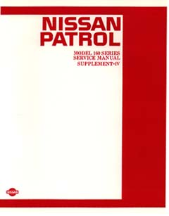

MQ Service Manual Supplement (1985)  Info Also refer to the original 1980 service manual, and the other supplements from 1983 and 1984. Download 3.5MB mq-service-manual-supplement-1985.zip Chapters 4 Pages Chapter 10 - Manual Transmission 12 Pages Chapter 14 - Front Axle 2 Pages Chapter 15 - Rear Axle